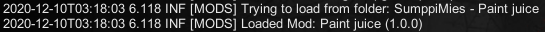

Here you will learn how to install modlets!
First, locate your 7 days to die installation folder. The default path is Program Files (x86)/Steam/steamapps/common/7 days to die Then, create a folder called Mods.
Then, download the modlet you want from the "downloads" tab and save it.
Next, extract the .rar to the mod folder.
Finally launch the game and open the console. Use F1 to open the 7 days to die console. You should see a message if you installed the modlet correctly.
